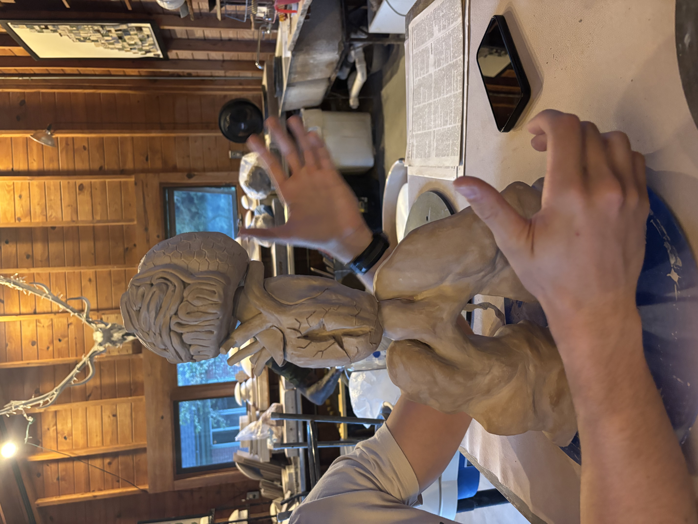

Project Name: Faking Good
This project investigates the idea of “faking good”—the
tendency to act as if everything is fine while deeper
issues, such as environmental damage, systemic problems,
or human suffering remain unresolved. Through the
intersection of science, data, and human emotion, the
work examines the gap between what systems present to
the public and the realities people experience.
Lungs: Climate change and economic systems, denying or
minimizing environmental damage while continuing
harmful practices. create the appearance of stability
without solving underlying issues.
Heart: Healthcare experiences, presenting the medical
system as fully effective, while patients may feel
unheard, dismissed, or reduced to data.
Brain: Science and emotion, exploring how analytical
data and human emotion interact when trying to
understand and solve complex problems.
